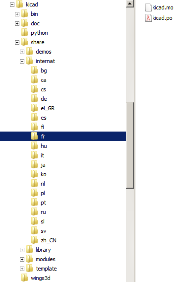
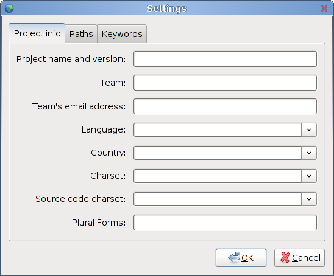
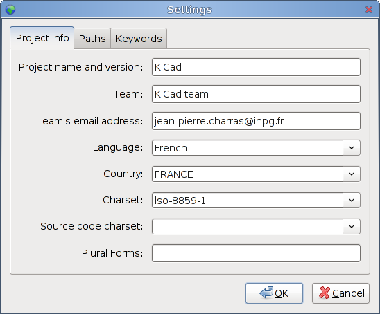
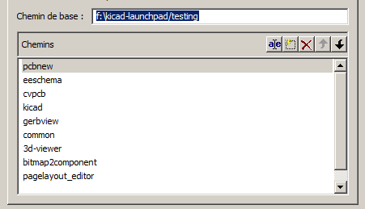
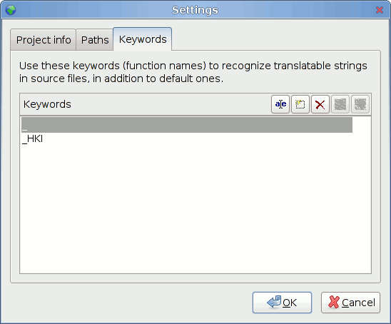
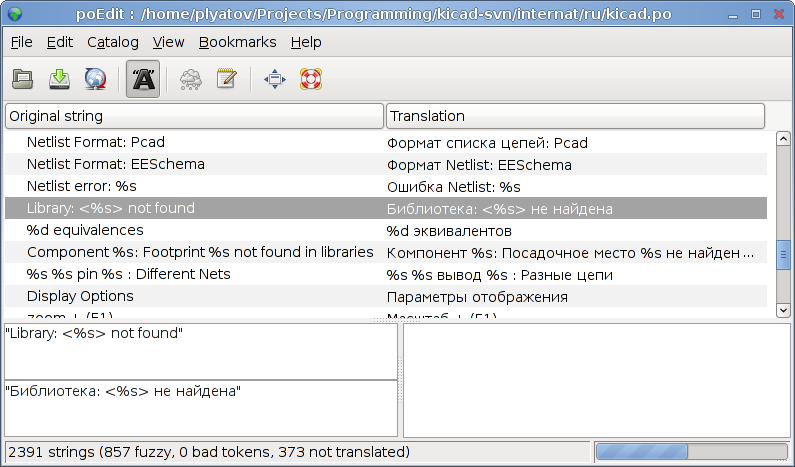
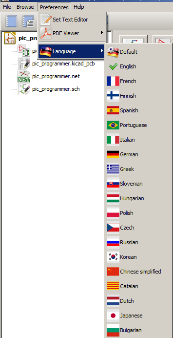

Reference manual
Copyright
This document is Copyright © 2010-2015 by it’s contributors as listed below. You may distribute it and/or modify it under the terms of either the GNU General Public License (http://www.gnu.org/licenses/gpl.html), version 3 or later, or the Creative Commons Attribution License (http://creativecommons.org/licenses/by/3.0/), version 3.0 or later.
All trademarks within this guide belong to their legitimate owners.
Contributors
Jean-Pierre Charras, Fabrizio Tappero, Wayne Stambaugh.
Feedback
Please direct any bug reports, suggestions or new versions to here:
-
About KiCad document: https://github.com/KiCad/kicad-doc/issues
-
About KiCad software: https://bugs.launchpad.net/kicad
-
About KiCad software i18n: https://github.com/KiCad/kicad-i18n/issues
Publication date and software version
Published on October 15, 2015.
1. Needed files and tools
Creating and/or maintaining translations do not need any skill in C++ programming: there is no change to do in KiCad files.
Translations are easy to do with a tool PoEdit that locate (in KiCad sources) sentences to translate and is able to create a dictionary for KiCad from translations created with this tool. So you need to install PoEdit, and get latest KiCad sources, and, for existing translations, get latest translations. Translations can be made under Linux, Window or MacOSX.
1.1. Download PoEdit
1.2. Downloading KiCad sources
KiCad sources are currently hosted on Launchpad:
Files can be downloaded from Launchpad by using a tool named "bazaar" (bzr in commands). So:
-
Install, if not already done, the tool named bazaar (easy to install under all platforms): see http://bazaar.canonical.com/
-
Download KiCad sources using the command bzr branch lp:kicad <directory where sources files are copied>
-
You’ll find this doc about translation and poedit configuration in Documentation on http://docs.kicad-pcb.org/en/gui_translation_howto.html
1.3. Download existing translations and docs
KiCad translations and documentations are also hosted on github at: https://github.com/KiCad/kicad-i18n/
Download translations using command:
git clone https://github.com/KiCad/kicad-i18n.git
2. Find sentences to translate
The different menus and tool tips in KiCad are internationalized, and can be easily translated into a local language without source code modifications.
The rules are:
-
They are written in English.
-
All strings which must be translated are written like: _("hello world"), and displayed "hello world" but if a dictionary is found translated into the locale language before displaying.
-
A dictionary English→locale handle translation (one dictionary by language).
The easier way to create and maintain the dictionary English→locale is to use, poedit. Poedit scans KiCad sources and allows you to enter translations. You must download KiCad sources and set poedit in order to create translations.
3. KiCad tree for translations
3.1. Dictionary tree
The dictionary will be found by KiCad only if it is in a suitable path:
 |
The suitable path is kicad/internat/xx, or kicad/internat/xx_yy with: xx = normalised locale indicator (short form) like:
or: xx_yy = normalized locale indicator (long form) like:
|
3.2. Search path
Dictionaries and on-line help files are searched in this order:
-
In the path in normalized locale indicator (long form) (kicad/internat/xx_yy)
-
In the path in normalized locale indicator (short form) (kicad/internat/xx)
And for on-line help files search is made in:
-
In the path in normalized locale indicator (long form) (kicad/help/xx_yy)
-
In the path in normalized locale indicator (short form) (kicad/help/xx)
-
kicad/help/en
-
kicad/help/fr
|
Note
|
The main KiCad path in retrieved from the binary path, or (if not found): under windows:
under linux:
|
3.3. Files
In each directory there are 2 files kicad/internat/xx:
-
internat.po (the dictionary file
-
internat.mo (the poedit work file)
4. Using poedit
4.1. Installation
Download and install poedit (http://www.poedit.net). Poedit exists on Windows, Linux and Mac OS X.
Download and unzip KiCad sources.
4.2. KiCad preparation
KiCad sources: in this example files are in f:/kicad/. All the strings to translate are tagged like _("string to translate").
poedit must search the _ (underscore) symbol to locate these strings.
One must add in KiCad the suitable directory for the dictionary (kicad/share/internat/xx). In this example, the directory is kicad/share/internat/fr.
4.3. Poedit Configuration
Run poedit.
Run File/New catalog…
You should see something like:

4.4. Project Configuration

The source files are in English, so no need to choose something for source code.
4.5. Path and files Configuration

4.6. Keyword Configuration

A couple of keywords to enter here:
-
_ (underscore) used as tag in generic source files
-
_HKI used as a tag for the hotkeys description translation.
4.7. Save the project
Save the new projet in kicad/share/internat/xx with the name kicad.po.
5. Create or edit a dictionary
Run poedit and load a project (here: kicad.po).

Run the command Catalog/update from sources.
New strings (not yet translated) will be displayed on the top of the window.
6. Adding a new language entry in KiCad source code (devs only)
This step in NOT required. It is useful only for developers, and for testing purpose only
In KiCad we can force the used language.
It is highly recommended to use the default language.

But because developers have to test translations, a new entry in the language list can be useful for testing purposes.
6.1. Steps
6.1.1. Adding a new id in include/id.h.
→ In include/id.h, locate the sequence like:
ID_LANGUAGE_CHOICE, ID_LANGUAGE_DEFAULT, ID_LANGUAGE_ENGLISH, ID_LANGUAGE_FRENCH, ID_LANGUAGE_SPANISH, ID_LANGUAGE_GERMAN, ID_LANGUAGE_RUSSIAN, ID_LANGUAGE_PORTUGUESE,
and add a new entry in list (which will be used later in menus) like:
ID_LANGUAGE_MY_LANGUAGE before ID_LANGUAGE_CHOICE_END.
6.1.2. Adding a new icon (aesthetic purpose only)
→ Create a new icon in SVG (Using Inkscape for instance) format: usually the country flag. For instance lang_new.svg
Others language icons are in common/bitmaps_png/source
6.1.3. Editing bitmaps_png/CMakeLists.txt
→ locate the text:
lang_catalan lang_chinese lang_bg lang_cs lang_def lang_de lang_en lang_es lang_fr lang_fi lang_gr lang_hu lang_it lang_jp lang_ko lang_nl lang_pl lang_pt lang_ru lang_sl
and add the new filename (without extension): lang_new
6.1.4. Editing include/bitmaps.h
→ locate the text:
EXTERN_BITMAP( lang_bg_xpm ) EXTERN_BITMAP( lang_catalan_xpm ) EXTERN_BITMAP( lang_chinese_xpm ) EXTERN_BITMAP( lang_cs_xpm ) EXTERN_BITMAP( lang_def_xpm ) EXTERN_BITMAP( lang_de_xpm ) EXTERN_BITMAP( lang_en_xpm ) EXTERN_BITMAP( lang_es_xpm ) EXTERN_BITMAP( lang_fr_xpm ) EXTERN_BITMAP( lang_fi_xpm ) EXTERN_BITMAP( lang_gr_xpm ) EXTERN_BITMAP( lang_hu_xpm ) EXTERN_BITMAP( lang_it_xpm ) EXTERN_BITMAP( lang_jp_xpm ) EXTERN_BITMAP( lang_ko_xpm ) EXTERN_BITMAP( lang_nl_xpm ) EXTERN_BITMAP( lang_pl_xpm ) EXTERN_BITMAP( lang_pt_xpm ) EXTERN_BITMAP( lang_ru_xpm ) EXTERN_BITMAP( lang_sl_xpm )
and add a line to include the new icon name called lang_new_xpm (_xpm added to the filename).
6.1.5. Editing common/edaappl.cpp
→ Locate:
struct LANGUAGE_DESCR { int m_WX_Lang_Identifier; // wxWidget locale identifier (see wxWidget doc) int m_KI_Lang_Identifier; // kicad identifier used in menu selection (see id.h) const char** m_Lang_Icon; // the icon used in menus const wxChar* m_Lang_Label; // Label used in menus bool m_DoNotTranslate; // set to true if the m_Lang_Label must not be translated }; #define LANGUAGE_DESCR_COUNT 14 static struct LANGUAGE_DESCR s_Language_List[LANGUAGE_DESCR_COUNT] = { { wxLANGUAGE_DEFAULT, ID_LANGUAGE_DEFAULT, lang_def_xpm, _( "Default" ) }, { wxLANGUAGE_ENGLISH, ID_LANGUAGE_ENGLISH, lang_en_xpm, wxT( "English" ), true; }, { wxLANGUAGE_FRENCH, ID_LANGUAGE_FRENCH, lang_fr_xpm, _( "French" ) },
and add a new entry like:
{ wxLANGUAGE_MY_LANGUAGE, ID_LANGUAGE_MY_LANGUAGE, lang_new_xpm, _( "My_language" ) },
wxLANGUAGE_MY_LANGUAGE is the wxWidgets language identifier for the country (see wxWidget doc).
6.1.6. Recompiling
You should be a PNG Maintainer (see bitmaps_png/CMakeLists.txt file), i.e compile KiCad with the option MAINTAIN_PNGS on Obviously, this is the next and last step.